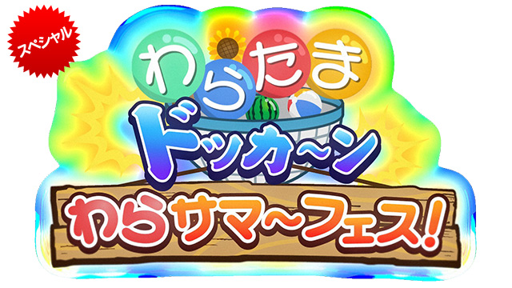

シューマッハVSヤーレンズ2018年2月26日放送
Win:シューマッハ
ヤーレンズ:Lose
動物になりきるコントが人気のシューマッハと若手漫才師ヤーレンズが爆笑ネタで対戦！ 80人の小学生が玉入れで勝敗を決める。子どもたちをドッカ～ンと笑わせるのは？
「日本一子どもにウケるお笑い芸人」を目指して2組の芸人が対決するお笑いネタ番組。今回は瞬時にさまざまな動物に変身するコントで人気上昇中のシューマッハと、期待の若手漫才師ヤーレンズが爆笑ネタをひっさげて登場。勝敗を決めるのは80人の小学生。おもしろいと思う芸人のカゴに、運動会の「玉入れ」のように玉を投げ入れる。シューマッハが犬から別の動物に変身！さらにあの踊りを踊る！キッズの心をつかむのは、どっち？

うしろシティVSヒガシ逢ウサカ2018年2月19日放送
Lose:うしろシティ
ヒガシ逢ウサカ:Win
東京からうしろシティ、大阪からヒガシ逢ウサカという東西期待の若手が爆笑ネタで対戦！ 80人の小学生が玉入れで勝敗を決める。子どもたちをドッカ～ンと笑わせるのは？
「日本一子どもにウケるお笑い芸人」を目指して2組の芸人が対決するお笑いネタ番組。今回は料理芸人としても活躍中のうしろシティと、結成7年目のヒガシ逢ウサカという東西期待の若手コンビが爆笑コントをひっさげて登場。勝敗を決めるのは80人の小学生。おもしろいと思う芸人のカゴに、運動会の「玉入れ」のように玉を投げ入れる。刑事役のヒガシ逢ウサカが犯行現場で分かったこととは！？キッズの心をつかむのは、どっち？

U字工事 VS オジンオズボーン2018年2月5日放送
Lose:U字工事
オジンオズボーン:Win
地元栃木を愛する漫才師・U字工事が初登場！相手はすでに1勝しているオジンオズボーン 80人の小学生が玉入れで勝敗を決める。子どもたちをドッカ～ンと笑わせるのは？
「日本一子どもにウケるお笑い芸人」を目指して2組の芸人が対決するお笑いネタ番組。生まれ故郷の栃木県をこよなく愛する漫才師・U字工事と、自称1000のボケを持つオジンオズボーンが爆笑ネタをひっさげて登場。勝敗を決めるのは80人の小学生。おもしろいと思う芸人のカゴに、運動会の「玉入れ」のように玉を投げ入れる。U字工事の郷土漫才か！？オジンオズボーンの怒とうのボケか！？キッズの心をつかむのは、どっち？

ザブングル VS 三四郎2018年1月29日放送
Win:ザブングル
三四郎:Lose
顔芸あり動きありのネタを見せるザブングルとテレビで大人気の三四郎が爆笑ネタで対戦！ 80人の小学生が玉入れで勝敗を決める。子どもたちをドッカ～ンと笑わせるのは？
「日本一子どもにウケるお笑い芸人」を目指して2組の芸人が対決するお笑いネタ番組。今回は得意の顔芸とアクションで子どもに人気のザブングルと、バラエティー番組に引っ張りダコの三四郎が爆笑ネタをひっさげて登場。勝敗を決めるのは80人の小学生。おもしろいと思う芸人のカゴに、運動会の「玉入れ」のように玉を投げ入れる。ザブングルの怒とうのコントか！？三四郎のほんわか漫才か！？キッズの心をつかむのは、どっち？

とにかく明るい安村 VS チョコレートプラネット2018年1月15日放送
Win:とにかく明るい安村
チョコレートプラネット:Lose
とにかく明るい安村とチョコレートプラネットが東京都中央区の豊海小学校で公開対戦！80人の小学生が玉入れで勝敗を決める。子どもたちをドッカ～ンと笑わせるのは？
「日本一子どもにウケるお笑い芸人」を目指して2組の芸人が対決するお笑いネタ番組。前回に続いて東京都中央区の豊海小学校で公開収録！「安心してください」で一躍有名になったとにかく明るい安村と、チョコレートプラネットが爆笑ネタをひっさげて登場。勝敗を決めるのは80人の小学生。おもしろいと思う芸人のカゴに、運動会の「玉入れ」のように玉を投げ入れる。結果は大激戦に！？キッズの心をつかむのは、いったいどっち？

テツandトモ VS あばれる君2018年1月8日放送
Lose:テツandトモ
あばれる君:Win
東京都中央区で番組初の公開収録！出演は「なんでだろう」のテツandトモとあばれる君。80人の小学生が玉入れで勝敗を決める。子どもたちをドッカ～ンと笑わせるのは？
「日本一子どもにウケるお笑い芸人」を目指して2組の芸人が対決するお笑いネタ番組。今回は番組初の公開収録で東京都中央区の豊海小学校からお届け！「なんでだろう」で有名なテツandトモと、いま子どもに大人気のあばれる君が爆笑ネタをひっさげて登場。勝敗を決めるのは80人の小学生。おもしろいと思う芸人のカゴに、運動会の「玉入れ」のように玉を投げ入れる。勝負は大激戦に！キッズの心をつかむのは、いったいどっち？

ジャングルポケット VS GAG少年楽団2017年12月18日放送
Win:ジャングルポケット
GAG少年楽団:Lose
ジャングルポケットとGAG少年楽団というキングオブコントの決勝進出者が爆笑ネタで対戦！ 80人の小学生が玉入れで勝敗を決める。子どもたちをドッカ～ンと笑わせる
「日本一子どもにウケるお笑い芸人」を目指して2組の芸人が対決するお笑いネタ番組。今回はジャングルポケットとGAG少年楽団というキングオブコントのファイナリストかつトリオ芸人同士の対戦。勝敗を決めるのは80人の小学生。おもしろいと思う芸人のカゴに、運動会の「玉入れ」のように玉を投げ入れる。ジャンポケはサッカーの試合、GAGは修学旅行の就寝時、ともにとんでもないことが！キッズの心をつかむのは、どっち？

にゃんこスター VS 新作のハーモニカ2017年12月11日放送
Win:にゃんこスター
新作のハーモニカ:Lose
にゃんこスターと、ボイスパーカッションを使う新作のハーモニカという新星同士の対戦！ 80人の小学生が玉入れで勝敗を決める。子どもたちをドッカ～ンと笑わせるのは？
「日本一子どもにウケるお笑い芸人」を目指して2組の芸人が対決するお笑いネタ番組。今回は子どもに大人気のにゃんこスターと、ボイスパーカッションを使ったネタが特徴の2人組・新作のハーモニカが爆笑ネタをひっさげて登場。勝敗を決めるのは80人の小学生。おもしろいと思う芸人のカゴに、運動会の「玉入れ」のように玉を投げ入れる。にゃんこスターのあの動きを子どもたちが踊っちゃう！？キッズの心をつかむのは、どっち？

アンガールズ VS ななめ45°2017年12月4日放送
Win:アンガールズ
ななめ45°:Lose
テレビで大人気のアンガールズと電車ものまねで有名なななめ45°が爆笑ネタで対戦！ 80人の小学生が玉入れで勝敗を決める。子どもたちをドッカ～ンと笑わせるのは？
「日本一子どもにウケるお笑い芸人」を目指して2組の芸人が対決するお笑いネタ番組。今回は人気の長身コンビ・アンガールズと、鉄道モノマネが得意なななめ45°が爆笑ネタをひっさげて登場。勝敗を決めるのは80人の小学生。おもしろいと思う芸人のカゴに、運動会の「玉入れ」のように玉を投げ入れる。アンガールズのほのぼのコントか？ななめ45°のネタでレコーディングにやってきたのは？キッズの心をつかむのは、どっち？

オテンキ VS 高橋ちゃん2017年10月20日放送
Win:オテンキ
高橋ちゃん:Lose
いつもニコニコ3人組のオテンキと手作りロボットを操る高橋ちゃんが爆笑ネタで対戦！ 80人の小学生が玉入れで勝敗を決める。子どもたちをドッカ～ンと笑わせるのは？
「日本一子どもにウケるお笑い芸人」を目指して2組の芸人が対決するお笑いネタ番組。怒とうの小ボケ芸人・オテンキと、自分でロボットの相方を作ってしまった高橋ちゃんが爆笑ネタをひっさげて登場。勝敗を決めるのは80人の小学生。おもしろいと思う芸人のカゴに、運動会の「玉入れ」のように玉を投げ入れる。オテンキは学校に小ボケ先生が登場！高橋ちゃんはかわいいペットロボットで対抗！キッズの心をつかむのは、どっち？

3ガガヘッズ VS ねば～る君2017年11月13日放送
Lose:3ガガヘッズ
ねば～る君:Win
ゆるキャラのねば～る君が登場！対するは大道芸のような特殊芸を披露する3ガガヘッズ！ 80人の小学生が玉入れで勝敗を決める。子どもたちをドッカ～ンと笑わせるのは？
「日本一子どもにウケるお笑い芸人」を目指して2組の芸人が対決するお笑いネタ番組。今回はゆるキャラが初登場！納豆の妖精ねば～る君は子どもたちに大人気！対するは世界を回って活躍する3ガガヘッズが一風かわったネタをひっさげて登場。勝敗を決めるのは80人の小学生。おもしろいと思う芸人のカゴに、運動会の「玉入れ」のように玉を投げ入れる。ゆるキャラのかわいさか！？特殊芸か！？キッズの心をつかむのは、どっち？

タイムマシーン3号 VS 新宿カウボーイ2017年11月6日放送
Win:タイムマシーン3号
新宿カウボーイ:Lose
NHK「オンバト＋」2代目王者タイムマシーン3号と新宿カウボーイが爆笑ネタで対戦！ 80人の小学生が玉入れで勝敗を決める。子どもたちをドッカ～ンと笑わせるのは？
「日本一子どもにウケるお笑い芸人」を目指して2組の芸人が対決するお笑いネタ番組。今回はNHK「オンバト＋」2代目王者のタイムマシーン3号と、新宿カウボーイが爆笑ネタをひっさげて登場。勝敗を決めるのは80人の小学生。おもしろいと思う芸人のカゴに、運動会の「玉入れ」のように玉を投げ入れる。前回の雪辱に燃えるタイムマシーンか！新宿カウボーイの怒とうのギャクと小ボケ漫才か！キッズの心をつかむのは、どっち？

うしろシティ VS ザ・ギース2017年10月23日放送予定
Win:うしろシティ
ザ・ギース:Lose
うしろシティとザ・ギースというイケメンコンビが共にマジックを使った爆笑ネタで対戦！ 80人の小学生が玉入れで勝敗を決める。子どもたちをドッカ～ンと笑わせるのは？
「日本一子どもにウケるお笑い芸人」を目指して2組の芸人が対決するお笑いネタ番組。メンバーの1人が料理タレントとしても大活躍中のうしろシティと、シュールなコントを得意とするザ・ギースが爆笑ネタをひっさげて登場。勝敗を決めるのは80人の小学生。おもしろいと思う芸人のカゴに、運動会の「玉入れ」のように玉を投げ入れる。イケメン同士の対決はなんと共にマジックのコントで勝負！？キッズの心をつかむのは、どっち？

パペットマペット VS すっぽん大学2017年10月16日放送予定
Win:パペットマペット
すっぽん大学:Lose
かわいい牛とカエルがコントをするパペットマペットと、すっぽん大学が爆笑ネタで対戦！ 80人の小学生が玉入れで勝敗を決める。子どもたちをドッカ～ンと笑わせるのは？
「日本一子どもにウケるお笑い芸人」を目指して2組の芸人が対決するお笑いネタ番組。今回は小さなウシとカエルがショートコントを披露するパペットマペットと、不思議なコントが得意なすっぽん大学が対戦。勝敗を決めるのは80人の小学生。おもしろいと思う芸人のカゴに、運動会の「玉入れ」のように玉を投げ入れる。かわいいカエルがウシにかみついた！？すっぽん大学の首が妖術で落ちる！？。キッズの心をつかむのは、どっち？

カンカラ VS ぴろき2017年10月9日放送
Win:カンカラ
ぴろき:Lose
時代劇コントのカンカラとウクレレ漫談のぴろき！ベテラン芸人2組が爆笑ネタで対戦！ 80人の小学生が玉入れで勝敗を決める。子どもたちをドッカ～ンと笑わせるのは？
「日本一子どもにウケるお笑い芸人」を目指して2組の芸人が対決するお笑いネタ番組。今回は時代劇のコントを披露する3人組・カンカラと、ウクレレ漫談のぴろきが爆笑ネタをひっさげて登場。勝敗を決めるのは80人の小学生。おもしろいと思う芸人のカゴに、運動会の「玉入れ」のように玉を投げ入れる。カンカラの殺陣と動きに子どもたち大爆笑！かたやぴろきは自分の幼いころの自虐ネタを歌う！キッズの心をつかむのは、どっち？

シューマッハ VS スーパーニュウニュウ2017年10月2日放送
Lose:シューマッハ
スーパーニュウニュウ:Win
動物コントのシューマッハと手作り小道具を使うスーパーニュウニュウが爆笑ネタで対戦！ 80人の小学生が玉入れで勝敗を決める。子どもたちをドッカ～ンと笑わせるのは？
「日本一子どもにウケるお笑い芸人」を目指して2組の芸人が対決するお笑いネタ番組。今回は動物コントでブレイク寸前のシューマッハと、手作り小道具を使ったコントを披露する男女コンビ・スーパーニュウニュウが爆笑ネタをひっさげて登場。勝敗を決めるのは80人の小学生。おもしろいと思う芸人のカゴに、運動会の「玉入れ」のように玉を投げ入れる。シューマッハが瞬時に2匹の犬に変身！？キッズの心をつかむのは、どっち？

磁石 VS 天竺鼠2017年9月18日放送
Win:磁石
天竺鼠:Lose
正統派漫才の磁石と、大きなお笑い大会で何度も入賞経験のある天竺鼠が爆笑ネタで対戦！ 80人の小学生が玉入れで勝敗を決める。子どもたちをドッカ～ンと笑わせるのは？
「日本一子どもにウケるお笑い芸人」を目指して2組の芸人が対決するお笑いネタ番組。今回は正統派漫才師の磁石と、大きなコントの大会で3度決勝に残った天竺鼠が爆笑ネタをひっさげて登場。勝敗を決めるのは80人の小学生。おもしろいと思う芸人のカゴに、運動会の「玉入れ」のように玉を投げ入れる。磁石の子どもを巻き込む漫才か？天竺鼠のコントは子どもの前に突然おすしのイクラが登場！？キッズの心をつかむのは、どっち？

藤崎マーケット VS 学天即2017年9月11日放送
Win:藤崎マーケット
学天即:Lose
今回はラララライ体操でブレイクした藤崎マーケットと、正統派漫才・学天即の大阪対決！ 80人の小学生が玉入れで勝敗を決める。子どもたちをドッカ～ンと笑わせるのは？
「日本一子どもにウケるお笑い芸人」を目指して2組の芸人が対決するお笑いネタ番組。今回は大阪の漫才対決！ラララライ体操でブレイクした藤崎マーケットと、正統派上方漫才の学天即が爆笑ネタをひっさげて登場。勝敗を決めるのは80人の小学生。おもしろいと思う芸人のカゴに、運動会の「玉入れ」のように玉を投げ入れる。藤崎マーケットの動きまくる漫才か！？童謡を笑いにかえる学天即か！？キッズの心をつかむのは、どっち？

テツandトモ VS マギー審司2017年9月4日放送
Win:テツandトモ
マギー審司:Lose
テツandトモとマギー審司！リズムネタと爆笑マジックという大人気ベテラン芸の対戦！ 80人の小学生が玉入れで勝敗を決める。子どもたちをドッカ～ンと笑わせるのは？
「日本一子どもにウケるお笑い芸人」を目指して2組の芸人が対決するお笑いネタ番組。今回はリズムネタで大人気のテツandトモと、お笑いマジシャン・マギー審司が爆笑ネタをひっさげて登場。勝敗を決めるのは80人の小学生。おもしろいと思う芸人のカゴに、運動会の「玉入れ」のように玉を投げ入れる。「♪なんでだろ～」の動きに子どもたち大爆笑！マギー審司は本当にすごいマジック披露！？キッズの心をつかむのは、どっち？
- 
わらたまドッカ～ン わらサマ～フェス！2017年8月1日放送
Win:パンクブーブー
パンサー:Lose
子ども向けお笑いネタ番組「わらたまドッカ～ン」がこの夏送る、お笑いサマーフェスティバル！人気芸人がネタ披露に加え、子どもたちと一緒にさまざまな企画に挑戦する
子ども向けお笑いネタ番組「わらたまドッカ～ン」がこの夏送る、人気芸人と子どもたちが一緒になって楽しむサマーフェスティバル。これまでの対戦で勝利をあげた芸人の中から三四郎、ハマカーン、パンクブーブー、パンサーの4組が登場し「この夏いちばん子どもたちを楽しませた芸人」を競う。ネタ対決に加えて「リアクション」や「動き」などの企画にも挑戦！子どもたちと一緒に答えを考えたり判定をしたり、スタジオ中が一体に！

ハマカーン VS ジャルジャル2017年7月10日放送
Win:ハマカーン
ジャルジャル:Lose
漫才王者のハマカーンと5000以上のコントネタを持つジャルジャルが爆笑ネタで対戦！ 80人の小学生が玉入れで勝敗を決める。子どもたちをドッカ～ンと笑わせるのは？
「日本一子どもにウケるお笑い芸人」を目指して2組の芸人が対決するお笑いネタ番組。今回は漫才チャンピオンのハマカーンと、これまでに作ったコントは5000個以上というジャルジャルが爆笑ネタをひっさげて登場。勝敗を決めるのは80人の小学生。おもしろいと思う芸人のカゴに、運動会の「玉入れ」のように玉を投げ入れる。大笑いをしていたジャルジャル・福徳が突然ゴリラに変わった！？キッズの心をつかむのは、どっち？
-
ジグザグジギー VS オジンオズボーン2017年7月3日放送
Lose:ジグザグジギー
オジンオズボーン:Win
「オンバト＋」王者のジグザグジギーと、1000のボケを持つオジンオズボーンが対戦！80人の小学生が玉入れで勝敗を決める。子どもたちをドッカ～ンと笑わせるのは？
日本一子どもにウケるお笑い芸人」を目指して2組の芸人が対決するお笑いネタ番組。今回は、今注目の若手コンビ・ジグザグジギーと、怒とうのボケ漫才を披露するオジンオズボーンが爆笑ネタをひっさげて登場。勝敗を決めるのは80人の小学生。おもしろいと思う芸人のカゴに、運動会の「玉入れ」のように玉を投げ入れる。ジグザグジギーのコントか！？オジンオズボーンはボケ続ける漫才か！？キッズの心をつかむのは、どっち？
-
ジャングルポケット VS インディアンス2017年6月26日放送
Win:ジャングルポケット
インディアンス:Lose
コントで人気のジャングルポケットと元気な関西弁漫才師インディアンスが爆笑ネタで対戦！80人の小学生が玉入れで勝敗を決める。子どもたちをドッカ～ンと笑わせるのは？
「日本一子どもにウケるお笑い芸人」を目指して2組の芸人が対決するお笑いネタ番組。今回はコントトリオ「ジャングルポケット」と元気な若手漫才師「インディアンス」が爆笑ネタをひっさげて登場。勝敗を決めるのは80人の小学生。おもしろいと思う芸人のカゴに、運動会の「玉入れ」のように玉を投げ入れる。ジャンポケ斉藤の“キレキレダンス”は必見！そしてインディアンスの怖い話に爆笑！？キッズの心をつかむのは、どっち？
-
パンサー VS ラリゴ2017年6月19日放送
Win:パンサー
ラリゴ:Lose
コントで人気の「パンサー」と歌って踊ってクイズを出題する「ラリゴ」が爆笑ネタで対戦！80人の小学生が玉入れで勝敗を決める。子どもたちをドッカ～ンと笑わせるのは？
「日本一子どもにウケるお笑い芸人」を目指して2組の芸人が対決するお笑いネタ番組。今回はコントトリオ「パンサー」と楽しいクイズを出題する「ラリゴ」が爆笑ネタをひっさげて登場。勝敗を決めるのは80人の小学生。おもしろいと思う芸人のカゴに、運動会の「玉入れ」のように玉を投げ入れる。パンサー尾形の最近ツイてない理由が判明…？そして「ラリゴクイズ」の意外な展開にビックリ！？キッズの心をつかむのは、どっち？
-
脳みそ夫 VS サツマカワRPG2017年6月12日放送
Lose:脳みそ夫
サツマカワRPG:Win
今後の活躍が注目される新進気鋭のお笑い芸人「脳みそ夫」と「サツマカワRPG」が対戦！80人の小学生が玉入れで勝敗を決める。子どもたちをドッカ～ンと笑わせるのは？
「日本一子どもにウケるお笑い芸人」を目指して2組の芸人が対決するお笑いネタ番組。今回は東京のお笑いライブで注目を集めている2人の芸人「脳みそ夫」と「サツマカワRPG」が爆笑ネタをひっさげて登場。勝敗を決めるのは80人の小学生。おもしろいと思う芸人のカゴに、運動会の「玉入れ」のように玉を投げ入れる。脳みそ夫演じるキャラクター「名とん偵ブタ美」に子どもたちの反応は…？ キッズの心をつかむのは、どっち？
-
タイムマシーン3号 VS パーマ大佐2017年6月 5日放送
Lose:タイムマシーン3号
パーマ大佐:Win
お笑い番組チャンピオンのタイムマシーン3号と歌ネタ芸人のパーマ大佐が爆笑ネタで対戦！80人の小学生が玉入れで勝敗を決める。子どもたちをドッカ～ンと笑わせるのは？
「日本一子どもにウケるお笑い芸人」を目指して2組の芸人が対決するお笑いネタ番組。今回はお笑い番組「オンバト＋」2代目チャンピオンのタイムマシーン3号と、歌ネタ芸人のパーマ大佐が爆笑ネタをひっさげて登場。勝敗を決めるのは80人の小学生。おもしろいと思う芸人のカゴに、運動会の「玉入れ」のように玉を投げ入れる。パーマ大佐が歌う“ツッコミアンサーソング”にスタジオ中大笑い！キッズの心をつかむのは、どっち？
-
アンガールズ VS ザ・たっち2017年5月22日放送
Lose:アンガールズ
ザ・たっち:Win
コントでおなじみアンガールズとショートコントが得意なザ・たっちが爆笑ネタで対戦！ 80人の小学生が玉入れで勝敗を決める。子どもたちをドッカ～ンと笑わせるのは？
「日本一子どもにウケるお笑い芸人」を目指して2組の芸人が対決するお笑いネタ番組。今回はコントの実力者、アンガールズとザ・たっちが爆笑ネタをひっさげて登場。勝敗を決めるのは80人の小学生。おもしろいと思う芸人のカゴに、運動会の「玉入れ」のように玉を投げ入れる。アンガールズ・山根に何かがとりついた！？田中は山根を救えるか？そしてザ・たっちのショートコントは大爆笑なるか？キッズの心をつかむのは、どっち？
-
高橋ちゃん VS ボルトボルズ2017年5月15日放送
Lose:高橋ちゃん
ボルトボルズ:Win
ロボット芸人・高橋ちゃんとビックリ科学実験コント・ボルトボルズが爆笑ネタで対戦！ 80人の小学生が玉入れで勝敗を決める。子どもたちをドッカ～ンと笑わせるのは？
「日本一子どもにウケるお笑い芸人」を目指して2組の芸人が対決するお笑いネタ番組。今回は自作のロボットと一緒に漫才をする高橋ちゃんと、科学実験を取り入れたコントを演じるボルトボルズが爆笑ネタをひっさげて登場。勝敗を決めるのは80人の小学生。おもしろいと思う芸人のカゴに、運動会の「玉入れ」のように玉を投げ入れる。ボルトボルズの“割れない風船”コントに子どもたちビックリ！キッズの心をつかむのは、どっち？
-
はんにゃ VS たんぽぽ2017年5月8日放送
Lose:はんにゃ
たんぽぽ:Win
おもしろキャラのコントで人気の「はんにゃ」と「たんぽぽ」の2組が爆笑ネタで対戦！ 80人の小学生が玉入れで勝敗を決める。子どもたちをドッカ～ンと笑わせるのは？
「日本一子どもにウケるお笑い芸人」を目指して2組の芸人が対決するお笑いネタ番組。今回はおもしろキャラの人物が登場するコントで人気の「はんにゃ」と「たんぽぽ」が爆笑ネタをひっさげて登場。勝敗を決めるのは80人の小学生。おもしろいと思う芸人のカゴに、運動会の「玉入れ」のように玉を投げ入れる。はんにゃ・金田の“目立ちたがりの中学生”とたんぽぽ・川村の“頼りない放送部員”、キッズの心をつかむのは、どっち？
-
ラバーガール VS チョコレートプラネット2017年4月24日放送
Win:ラバーガール
チョコレートプラネット:Lose
コントの実力者・ラバーガールとチョコレートプラネットの2組が爆笑ネタで対戦！ 80人の小学生が“玉入れ”で勝敗を決める。子どもたちをドッカ～ンと笑わせるのは？
「日本一子どもにウケるお笑い芸人」を目指して2組の芸人が対決するお笑いネタ番組。今回は「Let's天才てれびくん」でおなじみだったラバーガールと、NHK新人お笑い大賞受賞のチョコレートプラネットがコントで登場。勝敗を決めるのは80人の小学生。おもしろいと思う芸人のカゴに、運動会の「玉入れ」のように玉を投げ入れる。チョコプラ・松尾がナゾの言葉を連発！はたして爆笑なるか？キッズの心をつかむのはどっち？
-
小島よしお VS とにかく明るい安村2017年4月17日放送
Win:小島よしお
とにかく明るい安村:Lose
“そんなの関係ねぇ”小島よしおと“安心してください”とにかく明るい安村が爆笑ネタ対決！小学生80人が玉入れで勝敗を決める。子どもたちをドッカ～ンと笑わせるのは？
「日本一子どもにウケるお笑い芸人」を目指して2組の芸人が対決するお笑いネタ番組。普段はパンツ1枚だけのネタでおなじみの小島よしおととにかく明るい安村が、2人ともきちんと服を着て爆笑ネタ決戦！勝敗を決めるのは80人の小学生。おもしろいと思う芸人のカゴに、運動会の「玉入れ」のように玉を投げ入れる。小島よしおの“コジマリオネット”が進化！そして安村の歌声には安心できるのか？キッズの心をつかむのはどっち？
-
あばれる君 VS ザブングル2017年4月10日放送
Win:あばれる君
ザブングル:Lose
子どもに人気のあばれる君と“悔しいです！”でおなじみザブングルが爆笑ネタで対戦！80人の小学生が“玉入れ”で勝敗を決める。子どもたちをドッカ～ンと笑わせるのは？
「日本一子どもにウケるお笑い芸人」を目指して2組の芸人が対決するお笑いネタ番組。今回は人気芸人・あばれる君とコントの実力者・ザブングルが爆笑ネタをひっさげて登場。勝敗を決めるのは80人の小学生。おもしろいと思う芸人のカゴに、運動会の「玉入れ」のように玉を投げ入れる。あばれる君が今年流行させたいギャグに子どもたちの反応は？そしてザブングル・加藤の変顔がますます進化！？キッズの心をつかむのは、どっち？
-
コロコロチキチキペッパーズ VS 三四郎初回放送:2017年4月3日
Lose:コロコロチキチキペッパーズ
三四郎:Win
コント王者・コロコロチキチキペッパーズと人気漫才コンビ・三四郎が爆笑ネタで対戦！80人の小学生が“玉入れ”で勝敗を決める。子どもたちをドッカ～ンと笑わせるのは？
「日本一子どもにウケるお笑い芸人」を目指して2組の芸人が対決するお笑いネタ番組。今回はキングオブコントで優勝した実力者・コロコロチキチキペッパーズと人気漫才コンビ・三四郎が爆笑ネタをひっさげて登場。勝敗を決めるのは80人の小学生。おもしろいと思う芸人のカゴに、運動会の「玉入れ」のように玉を投げ入れる。三四郎・小宮の声が聞き取りづらくて自慢の漫才が思わぬ方向に…！？キッズの心をつかむのは、どっち？
２０１７年度の放送
-
わらたまドッカ～ン プレイバック初回放送:2016年12月30日
「日本一子どもにウケるお笑い芸人」を目指してお笑い芸人が対決するお笑いネタ番組。80人の小学生が“玉入れ”で勝敗を決める。子どもたちをドッカ～ンと笑わせるのは？
勝敗を決めるのは80人の小学生！面白いと思うお笑い芸人のカゴに、運動会の「玉入れ」のように玉を投げ入れる。最初の対戦はパンクブーブーとジャングルポケット。漫才王者パンクブーブーがまさかのピンチに？続いてはハマカーンとハライチが対戦。ハライチ澤部が“ノリボケ”連発で大爆笑なるか？3対戦目は女性コンビ・ニッチェと若手・ジグザグジギーが登場。ニッチェ江上突然の熱唱に大拍手が！？キッズの心をつかむのは誰？
-
ニッチェ VS ジグザグジギー初回放送:2016年10月5日
Win:ニッチェ
ジグザグジギー:Lose
人気急上昇中のお笑い芸人・ニッチェとジグザグジギーが爆笑ネタを披露し、80人の小学生が“玉入れ”で勝敗を決める。子どもたちをドッカ～ンと笑わせるのは、どっち？
「日本一子どもにウケるお笑い芸人」を目指して2組の芸人が対決するお笑いネタ番組。今回はちょっぴり太めのキャラが魅力的な女性コンビ・ニッチェと、人気急上昇中の若手・ジグザグジギーが爆笑ネタをひっさげて登場。勝敗を決めるのは80人の小学生。おもしろいと思う芸人のカゴに、運動会の「玉入れ」のように玉を投げ入れる。ニッチェ江上突然の熱唱に子どもたちが思わず大拍手！？キッズの心をつかむのは、どっち？
-
ハマカーン VS ハライチ初回放送:2016年10月4日
Lose:ハマカーン
ハライチ:Win
漫才コンテスト優勝者・ハマカーンと大人気芸人・ハライチが爆笑ネタを披露し、80人の小学生が“玉入れ”で勝敗を決める。子どもたちをドッカ～ンと笑わせるのはどっち？
「日本一子どもにウケるお笑い芸人」を目指して2組の芸人が対決するお笑いネタ番組。今回は漫才のコンテストで優勝経験のある実力者・ハマカーンと、子どもにも大人気の芸人・ハライチが、爆笑ネタをひっさげて登場。勝敗を決めるのは80人の小学生。おもしろいと思う芸人のカゴに、運動会の「玉入れ」のように玉を投げ入れる。ハライチ澤部が“ノリボケ”連発で大爆笑なるか！？キッズの心をつかむのは、どっち？
-
パンクブーブー VS ジャングルポケット初回放送:2016年10月3日
Win:パンクブーブー
ジャングルポケット:Lose
漫才王者・パンクブーブーとコントの実力者・ジャングルポケットが爆笑ネタを披露。80人の小学生が“玉入れ”で勝敗を決める。子どもたちをドッカ～ンと笑わせるのは？
「日本一子どもにウケるお笑い芸人」を目指して2組の芸人が対決するお笑いネタ番組。今回は数々のコンテストで優勝してきた漫才王者・パンクブーブーと、コントの実力者・ジャングルポケットが、爆笑ネタをひっさげて登場。勝敗を決めるのは80人の小学生。おもしろいと思う芸人のカゴに、運動会の「玉入れ」のように玉を投げ入れる。王者パンクブーブーが、まさかのピンチに真っ青に…！？キッズの心をつかむのは、どっち？
パイロット版放送
(C) NHK